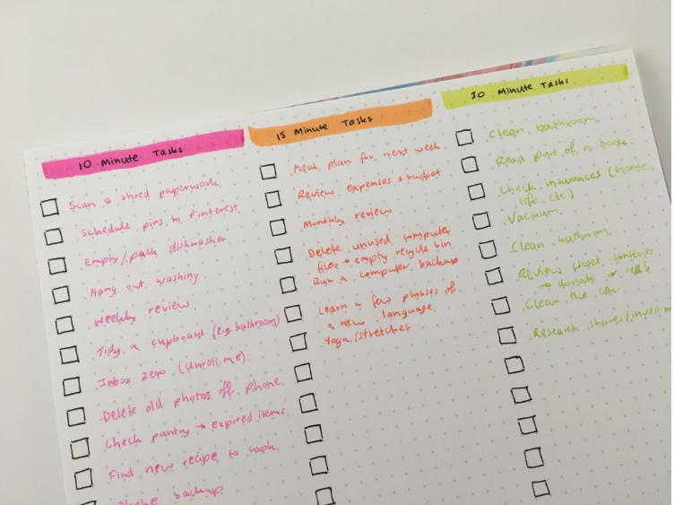

Trong Tiếng Anh, "To do" có nghĩa là “làm” và “list” là “danh sách”. Vì vậy “to do list” dịch đơn giản là danh sách các việc cần làm, các nhiệm vụ cần hoàn thành.
To-do list cũng chính là danh sách ghi chú được bạn ghi ra trên giấy nhớ, sổ cầm tay, hoặc trên máy tính, điện thoại để ghi nhớ và theo dõi các công việc bạn muốn thực hiện.
To do list được sử dụng trong cả công việc và cuộc sống thường ngày. Bằng cách liệt kê này, bạn có thể tránh việc cứ nhớ nhớ quên quên, rồi bỏ lỡ những thứ quan trọng cần được ưu tiên.
Todolist tập trung vào quản lý và theo dõi công việc trong khi Checklist tập trung vào kiểm tra và đảm bảo tuân thủ quy trình. Todolist thường có thứ tự ưu tiên và áp dụng trong nhiều trường hợp trong khi Checklist không nhất thiết cần thứ tự ưu tiên và phù hợp với các quy trình cụ thể. Dưới đây là bảng so sánh Todolist và Checklist:
| Tiêu chí | To Do List | Checklist |
|---|---|---|
| Mục đích sử dụng | Todolist áp dụng để quản lý và theo dõi công việc, nhiệm vụ hoặc dự án cần hoàn thành. Nó giúp người sử dụng để dàng tổ chức, lên kế hoạch đồng thời theo dõi tiến độ và đảm bảo không bỏ sót công việc quan trọng. | Checklist được sử dụng để kiểm tra và đảm bảo rằng tất cả các bước, công việc hoặc yêu cầu đã được hoàn thành. Nó đóng vai trò là một danh sách kiểm tra để đảm bảo tuân thủ quy trình, quy định hoặc yêu cầu cụ thể. |
| Thứ tự và sự ưu tiên | Todolist thường được sắp xếp theo thứ tự ưu tiên, trong đó các công việc quan trọng hoặc cần hoàn thành trước được đặt ở đầu danh sách. | Checklist không nhất thiết cần phải có thứ tự ưu tiên mà nó sử dụng để liệt kê các bước hoặc yêu cầu cần hoàn thành và không đánh giá mức độ ưu tiên của từng mục. |
| Phạm vi sử dụng | Todolist được sử dụng trong nhiều trường hợp và lĩnh vực như cho cá nhân, công việc, dự án, quản lý thời gian… Áp dụng trong các tình huống tổ chức công việc hàng ngày, lập kế hoạch cho sự kiện hoặc quản lý dự án lớn. | Checklist thường được sử dụng trong các quy trình, quy định hoặc công việc có các bước xử lý rõ ràng. Ví dụ trong kiểm tra chất lượng sản phẩm, chuẩn bị cho một sự kiện hoặc đảm bảo tuân thủ quy trình. |
To do list được ưa dùng bởi nó mang lại khá nhiều lợi ích cho chúng ta. Cùng tìm hiểu những mặt lợi mà to do list đem lại nhé.
Có quá nhiều việc cần làm hoặc có quá nhiều thứ cần mua có thể làm bạn loạn trí. Chẳng hạn khi bạn mới họp xong và được giao hàng tá nhiệm vụ mới; hay khi bạn chuyển nhà và cần sắm sửa bao nhiêu đồ đạc. Đây là lúc to do list trở thành cánh tay trợ lực cho bạn.
Khi bạn lập ra danh sách các to do list, bạn sẽ nắm được các đầu việc cần làm. Chi tiết hơn, bạn nên đặt ra cái gì cần được ưu tiên để có thể thực hiện trước.
Cuộc sống và công việc chung quy đều là cuộc đua với thời gian.
Một to do list cho phép bạn đặt ra thứ tự ưu tiên nhất định cho loạt nhiệm vụ bạn có. Điều này có nghĩa bạn cũng sẽ thu xếp công việc một cách khoa học hơn, tránh việc đi quá thời hạn công việc cần được hoàn thành.
Khi mỗi cá nhân có danh sách rõ ràng về những gì cần làm, họ sẽ cảm thấy có mục tiêu rõ ràng và động lực để hoàn thành công việc.
Khi đã hoàn thành một việc, bạn sẽ có cảm giác tự hào vì đạt được điều gì đó. Sau đó, bạn lại có động lực tiếp tục làm các việc tiếp theo.
Nếu bạn đã trải qua cảm giác được đóng hàng nghìn tab trên máy tính sau khi làm xong bài luận hoặc bài nghiên cứu nào đó, bạn hẳn sẽ hiểu trải nghiệm này.
Bằng cách ghi lại các nhiệm vụ công việc cần làm, bạn sẽ không bỏ sót hoặc quên bất cứ điều gì quan trọng. Từ đó giúp nhà quản trị duy trì tổ chức và đảm bảo công việc được hoàn thành đúng thời hạn.